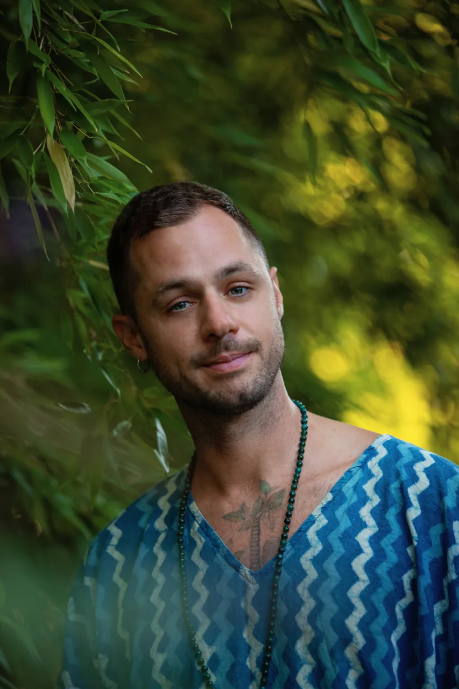

This is me.
My name is Péter Frák, also known as templeofsun. I am a holistic healer and soul alchemist with a rich and diverse background in spiritual and esoteric practices.
As a certified aromatherapist, Ayurvedic massage therapist, multidimensional energy worker, and practitioner of breath-work and meditation, my approach to healing blends ancient wisdom with contemporary techniques.
Namaste, welcome.
“My life's mission is to bring love, light, and transformation to those in need.”Péter Frák The practices

A light that kept calling
I was fifteen when my spiritual path first lit up. One sunny afternoon, in the garden of my childhood home in Kecskemét, Hungary, a neighbour told me about Reiki. That initiation (energy healing, aura reading, angel communication) became my first true spark of self-love, and a world quietly opened.
Through my twenties, spirituality was my refuge. While I came to terms with who I was, while loneliness visited, life swept me into fashion: head booker for Hungary's leading model agency, then stylist, editor and model agent in Berlin. Seven years surrounded by beauty, and still, something essential was missing.
The courage to leave Hungary healed me in ways doctors couldn't explain. And then, in 2017, aromatherapy found me.
From Budapest to the mountains of Portugal
Sri Lanka · Bali · Vietnam · the Philippines · Mysore · Portugal
During a course in Budapest, exhausted and searching, I wept in my teacher's arms, feeling embraced, seen and guided. After years of looking, I had finally arrived.
I left fashion. I studied and travelled through Asia (Sri Lanka, Bali, Vietnam, the Philippines): nine months of alchemy research and meditation, later deepened with Ayurvedic and Marma-Abhyanga training in Mysore, India, and Vipassana in both the Goenka and Mahasi traditions, with Tibetan Pranayama at a Buddhist centre. Then I settled as a therapist in the mountains of Portugal, where four seasons at the renowned Vale de Moses retreat taught me what fifty retreats and hundreds of bodies can teach a pair of hands.
Today I live between Portugal and Hungary: holding space at Quinta da Comporta and JNcQUOI, hosting the Soul Alchemy Retreats, and blending the templeofsun formulas, each one made in a meditative state, with prayer. I return to Asia every year to learn, recharge and deepen my connection to the Divine.
I hold my early illnesses, struggles and heartbreaks as gifts: they taught me compassion, strength and purpose. One day they will grow into healing centres of my own. That is the dream I am walking toward, one treatment, one blend, one retreat at a time.
with love, Peter aka templeofsun
The road so far
Reiki initiation
The first spark: energy healing in a Kecskemét garden.
The fashion years
Head booker in Budapest, then stylist, editor and model agent in Berlin.
Aromatherapy finds him
Diploma at Panarom Budapest, with nine months of alchemy research and meditation across South-East Asia.
Certified & recognised
Certified aromatherapist and massage therapist; member of the International Federation of Aromatherapists (IFA).
Ayurveda in India
Ayurvedic and Marma-Abhyanga massage at Mysore Ayurveda Academy.
Vale de Moses
In-house therapist, co-facilitator and meditation guide at the famed Portuguese mountain retreat; 50+ retreats supported.
Temple of Sun
Holistic therapist at Quinta da Comporta and JNcQUOI, host of Soul Alchemy Retreats, and alchemist of the templeofsun blends.
Credentials
Trained across Hungary, France, India, Sri Lanka, Bali and Portugal, formalised the slow, honest way.
Aromatherapy Diploma
Panarom, Budapest · 2-year programmeMember, International Federation of Aromatherapists
IFA · ongoingAyurvedic & Marma-Abhyanga Massage
Mysore Ayurveda Academy, IndiaReiki practitioner & teacher
initiated at 15 · practising sinceRebirthing Breathwork Facilitator
trained in PortugalAlso studied and practised: Traditional Chinese Medicine, sound healing, Vipassana & Metta meditation, Pranayama, astrology and yoga.
Work with me
Three doors into the temple: the oils, the treatments, the retreats. Each one begins with a simple hello.